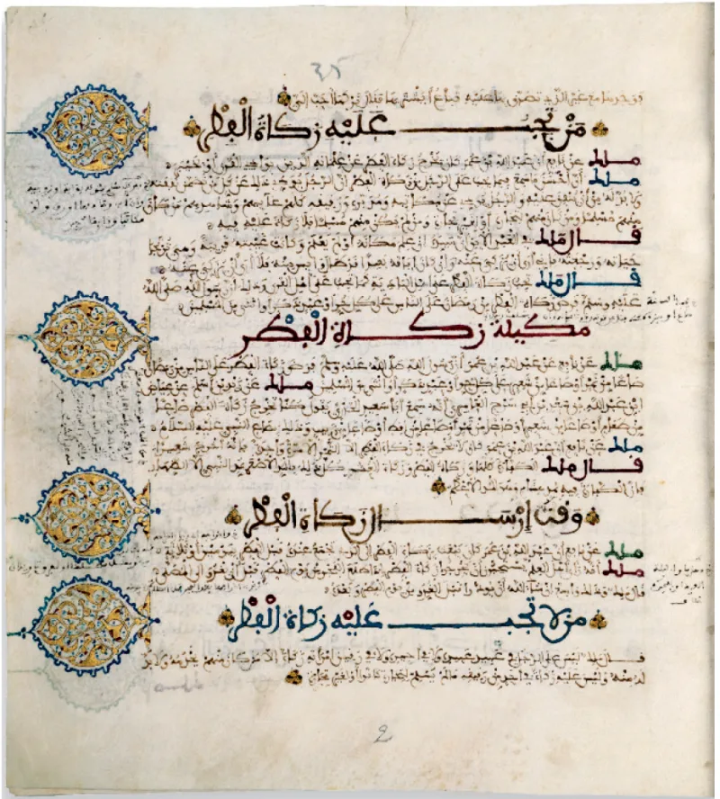

The facts sit in Islam's own trusted sources. You can make this point from their books alone.
At Khaybar in 628, the Muslims killed Kinana ibn al-Rabi. His wife was Safiyya bint Huyayy.
She was a Jewish noblewoman of seventeen. Ibn Ishaq adds that Kinana was first burned to reveal treasure, then beheaded (Guillaume, page 515).
Her father had been killed with Banu Qurayza.
Safiyya was taken captive. She was first given to Dihya al-Kalbi.
She was then given to Muhammad (Sahih al-Bukhari 4200). Sahih al-Bukhari 371 says he took her as wife on the journey home, at Sidd as-Sahba.
That was days after her husband died. The companions asked aloud whether she was a wife or a slave.
Al Hakam replies that she was honoured, not wronged. Muhammad freed her.
Her freedom was her mahr, her bridal gift. A captive became a Mother of the Believers.
Later reports show her love for him. Kinana died for breaking the surrender terms by hiding treasure.
The burning detail rests on Ibn Ishaq's chainless report, not on sahih hadith. Marriage shielded her, when a beaten noblewoman had no better path.
The waiting rule for captives was kept. Al Hakam argues her consent is recorded.
They admit the core themselves. The husband killed at Khaybar.
Safiyya taken from the captives. The wedding night on the road home.
That is Bukhari, not polemic. Only the burning detail rests on the sira alone.
The defences grant every fact and recast them as kindness. But her husband and father were killed by the same men.
She was offered marriage or slavery. That is not consent in any real sense.
And honour here assumes the whole captive system is right (Quran 33:50). Ask it as a question about character.
"Would you read Bukhari 371 with me? I want to understand how you see it."

They say he freed her, and her freedom was her bridal gift.
Al Hakam and other Muslim writers reply that Safiyya was honoured, not wronged. Muhammad freed her, and made her freedom her mahr, her bridal gift. A captive was raised to be a Mother of the Believers. Later reports show her speaking of her love for him, and defending him.
Kinana died, they argue, for breaking the surrender terms by hiding treasure. That was a treaty violation. The burning detail rests on Ibn Ishaq's chainless report, not on sahih hadith.
Her marriage protected her, in a world where a defeated noblewoman had no better outcome. The wedding night followed her purification, or istibra, which met the waiting rule for captives. And Al Hakam argues that her consent is recorded.
Strong for you: Bukhari holds the core, and only the praise is argued.
The core sequence is Bukhari, not polemic. The husband was killed at Khaybar. Safiyya was taken from the captives. The marriage was consummated on the journey home. Only the burning detail depends on the sira, the early biography, alone.
The defences concede every load-bearing fact and recast them as generosity. But her husband and her father were killed by the same force. She was offered marriage or captivity. That is not consent in any meaningful sense. And honour assumes the captivity system itself is legitimate (Quran 33:50).
This is graded admitted, since Islamic sources affirm the substance. The dispute is only over whether it was praiseworthy. That is exactly the question about character this category exists to pose.